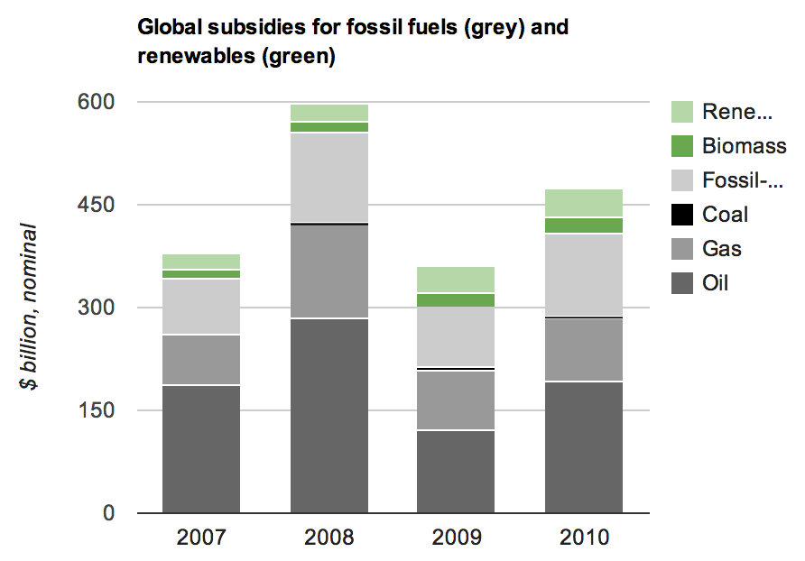
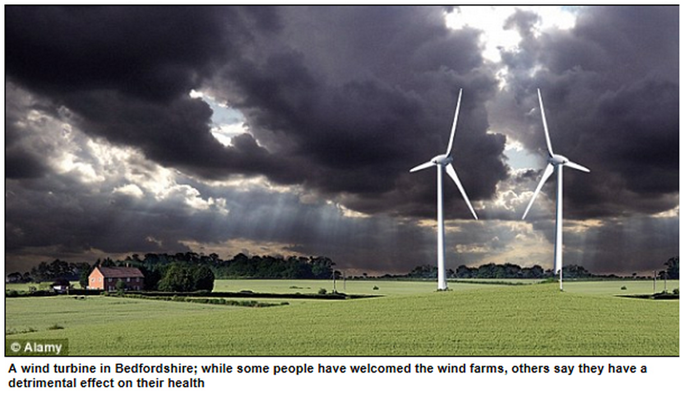
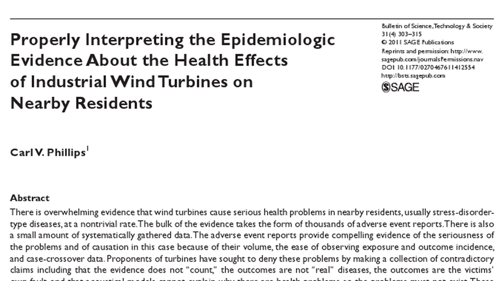
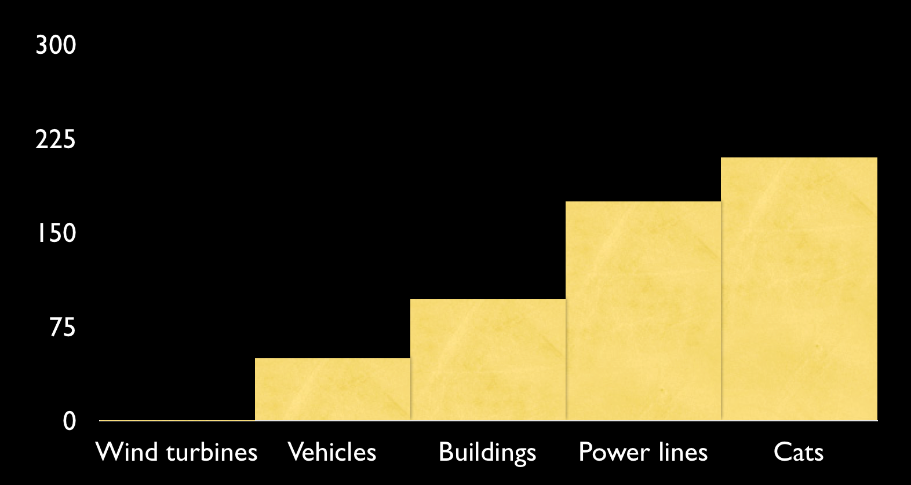
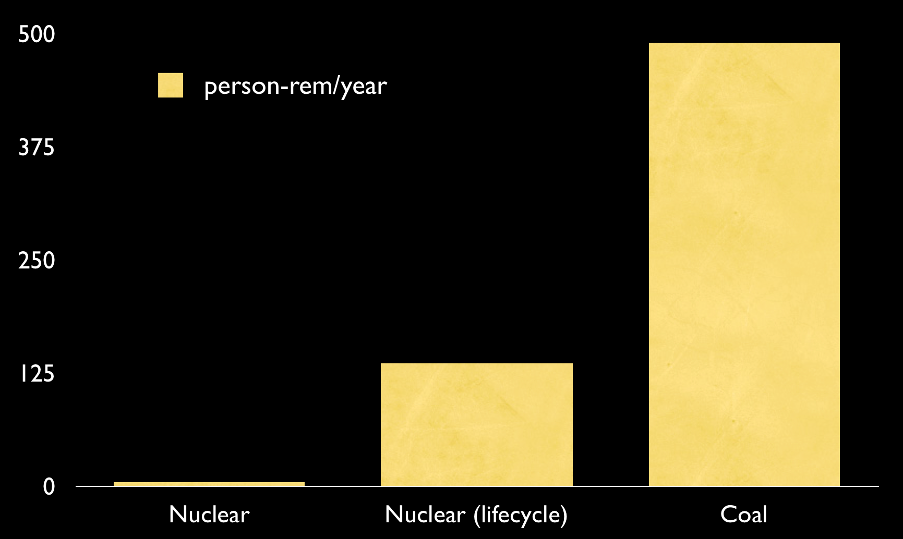
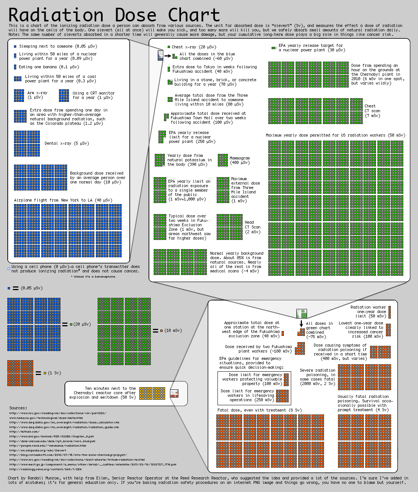
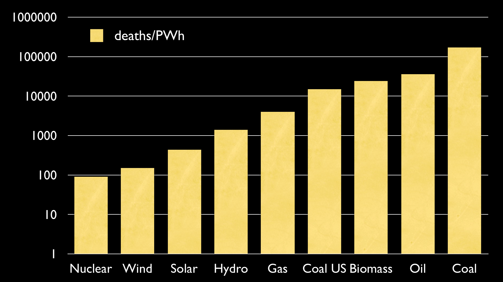
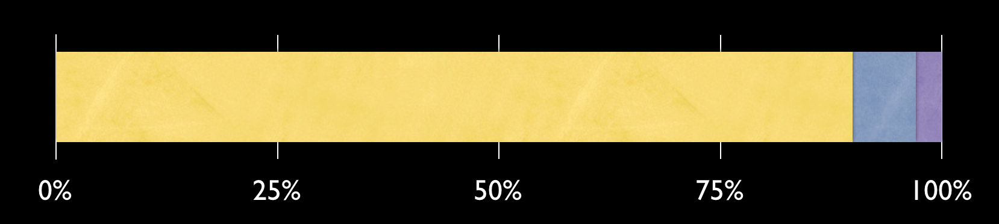
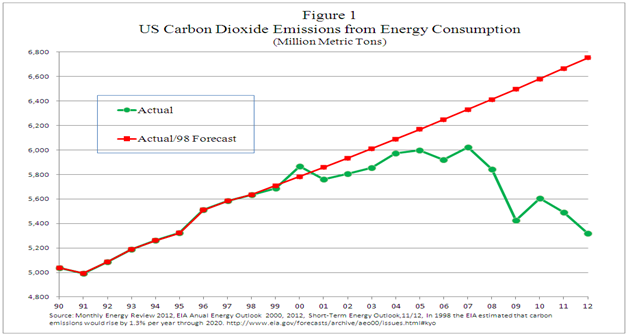
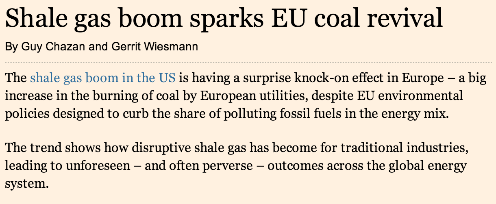

#1: Renewable power is driving up my energy bill!
Actual figures for price rises, including gas price rises
Daily Express
Express quote stating that price rises are due to gas
Estimated price increase without renewables, from same report

Figures from the IEA, via
The Guardian Datablog
Globally, we give 5x as much subsidy to fossil fuels as to renewables.
Renewable subsidies vs Fossil subsidies
http://www.guardian.co.uk/environment/datablog/2012/jan/18/fossil-fuel-subsidy
#2: We can run everything on the sun!
Total amount of solar energy vs total consumption
UK vs global solar potential.
Map of land space we would need.
#3: Wind turbines are bad for you!

Are wind farms saving or killing us?
James Delingpole, Daily Mail, Sep 8, 2012
The Mail published a story on Wind Turbine Syndrome, claiming that 'thousands' of people are falling sick near wind farms.
Shown is the original picture used for the story, which appears to be a wind farm in Mordor.
Astute observers may notice that the wind turbines shown appear to be mirror images of each other, and that the one on the right
is sort of floating in the air.
Anyway, the Mail's photoshop department notwithstanding...
Image mirrored by http://liebreich.com/mail-online-creates-fake-wind-farm-to-make-fake-point/
Wind Turbine Syndrome
dizziness; balance problems; memory loss; inability to concentrate; insomnia;
tachycardia; increased blood pressure; raised cortisol levels; headaches; nausea;
mood swings; anxiety; tinnitus; palpitations; depression
Delingpole has personally heard 'dozens' of these accounts.

Carl V. Phillips, 2011
A paper by Carl Phillips in the Bulletin of Science, Technology and Society.
The paper contains no numbers or analysis, and mainly seems to be an argument that we should take seriously the many
self-reported 'adverse event reports', and that this adds up to 'overwhelming evidence that
wind turbines cause serious health problems'.
The only mentions of "wind turbine syndrome" are in this paper, and on a *lot* of anti-turbine websites.
Carl Phillips seems to spend most of his time working on 'Tobacco Harm Reduction'.

"The Avian Benefits of Wind Energy: A 2009 Update"
Benjamin Sovacool, 2012, via Wikipedia
To compare, 50 to 100 million are killed by vehicles, 100 million to 1 billion a year killed by hitting buildings.
The big killer though are the cats, with estimates ranging from 200 million to 3 and a half billion.
Each turbine kills an average of 4.27 birds a year.
Even with an 10-fold expansion of wind power, it would still be less dangerous to birds than cellphone towers are.
The RSPB estimates that cats kill 55 million birds a year in the UK - even with a million turbines in the UK,
this figure would be nowhere near.
Climate change poses the single greatest long-term threat to birds and other wildlife
With the right strategy ... renewable targets can be achieved without significant detrimental effects on birds"
RSPB Website
#4: Nuclear power is dangerous!
Nuclear power scares people, and the debate around it can get pretty silly, with people losing a grip on basic facts.
Fortunately, there's plenty of science that's been done, and there are plenty of ways we can look at this.
First, which would you rather live next to, a nuclear plant or a coal plant?

Coal Combustion ORNL Review Vol. 26, No. 3&4, 1993
Nuclear plants may release a small amount of radioactivity into the environment during their normal operations.
Coal plants don't run on anything radioactive though, so surely they can't! Coal, however, contains Uranium, Thorium,
and all sorts of other things. These don't burnm very well, so they end up concentrated in the ash. Research in the US indicates
the following:
Nuclear plants: 4.8 person-rem/year
Nuclear full fuel lifecycle: 136
Coal: 490
At best, coal ends up releasing 3.6 times more radiation into the environment than nuclear, but we don't worry about that.

http://xkcd.com/radiation
This graphic from XKCD is endlessly fascinating here. You get the same radioation from eating a banana as you do from
living within 50 miles of a nuclear plant for a year, which is 10% of the normal background dose for a day.
The extra dose in Tokyo following Fukushima was 40 micro sieverts, the same as a single flight from New York to LA.

Hidden Costs of Energy , National Academies Press, 2010
Forbes
Another really interesting way of looking at the safety of power is by looking at the number of deaths for
the amount of energy produced. This is a logarithmic graph; otherwise you wouldn't see the bottom end at all.
Here we can see that globally, coal is the worst killer, mainly through the effects of particulates. Number at the top
is global, at 170k. China pushed this average up - their stat is 280k, but in the US it's only 15k. Biomass is really high,
with many people being killed by smoke effects in the developing world.
Nuclear is nowhere to be seen among the big killers; in fact, it's the lowest, even taking the worst-case figures for accidents
like Chernobyl.
Even wind is higher than nuclear, because sometimes an engineer falls off a turbine during maintenance.
UK Nuclear waste volume
(per person per year)
Low-level: 760ml
Intermediate: 60ml
High-level: 25ml

Sustainable Energy: Without the Hot Air , David MacKay, 2009
Low level is precautionary, and contains at most small amounts of short-lived radiation. This is not a problem,
and is often incinerated.
Intermediate is a bit nastier, with shielding required in some cases, but it's only the high-level waste that's really
radioactive, and takes about 1000 years to reach the same level as natural Uranium ore.
Lifetime supply of high-level waste for the whole country would fill 35 swimming pools.
Fusion energy - if it would ever operate - would create a serious waste problem,
would emit large amounts of radioactive material and could be used to produce materials
for nuclear weapons. A whole new set of nuclear risks would thus be created.
Greenpeace press release about ITER ,
June 28, 2005
Anyone spot the obvious mistake here?
Anti-scientific bullshit does not help anyone, from either side.
The fact is that there are plenty of reasons to be wary of relying on a new generation of nuclear power in this country,
ranging from the long lead time, a shortage of industrial capacity, and the even supply of Uranium, but safety is
really not one of them. This sort of thinking even gets applied to new nuclear designs, such as Thorium reactors, which are
even safer than the last generation.

US CO2 emissions 1990-2012, EIA Energy Outlook 2012, via Forbes .
US emissions are about where they were in 1995. Primary reason is the shale gas boom, which has produced cheap gas that displaced
coal.

Shale gas boom sparks EU coal revival , Financial Times, Feb 3 2013
However, the coal doesn't go unburnt. Instead it gets cheaper, and so gets exported to the EU and China.
Everything we pull out of the ground will get burnt.